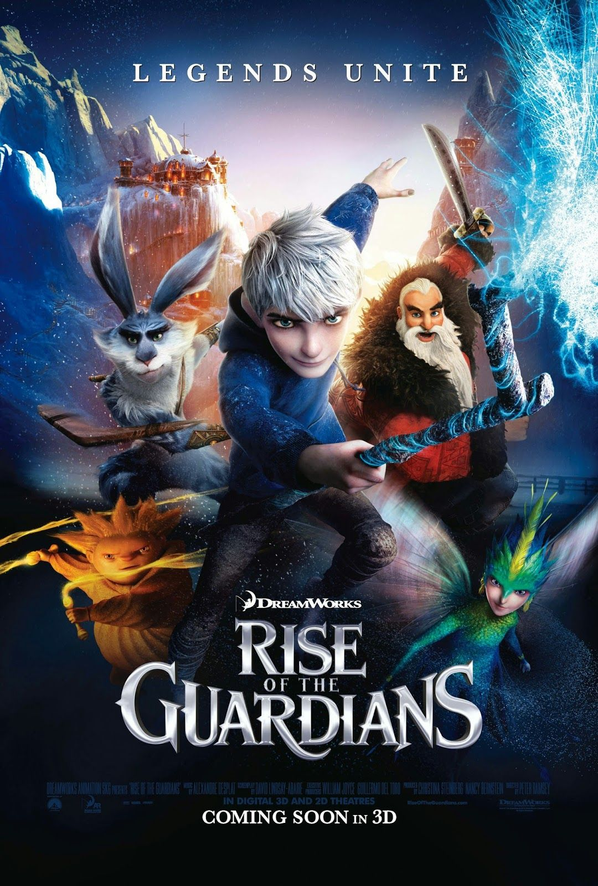

Navigatie Links
Wie ben ik?
In mijn vrije tijd
Series
Films
Boeken en muziek
Gaming
Nog 2 foto's
Wie ben ik?
Hallo ik ben Maxim ruysch,
Ik ben een dieren/natuur liefhebber, IT-fanaat, film en serie liefhebber, gamer, lezer, circusartiest,
skiër en
een snowboarder. Mijn
favoriete seizoen is dan ook de winter omdat ik dan sneeuw heb en het eindelijk niet te warm is. Ik ben
gelukkig samen met mijn vriendin Silke sinds september 2013 en als corona het toelaat trouwen wij in
september 2021.

In mijn vrije tijd
Series
Ik kijk vele series. Over de jaren heen heb ik er dan ook al heel wat versleten en sommige zelfs 2X. een
beknopte opsomming uit de lijst: Blackadder, Bones, Dexter, Elementary, Friends, Grimm, IT Crowd, Legend
of the seeker, Sherlock, The big bang theory, The librarians, Young sheldon en Zonde van
de zendtijd (ja beknopt). De voorbije 2-3 jaar heb ik me er mee bezig gehouden alle afleveringen van
Doctor Who te
kijken. Alle 38 seizoenen van zwart wit tot nu. Op een noodlottige dag had de BBC een hoop afleveringen
weggegooid en bleef er enkel nog geluid en wat foto's van over. Zelfs die reconstructies (eerder een
slideshow met een bandje over) heb ik ook allemaal gezien, kwestie van niets te missen (zoals de 1e
regeneratie van de dokter). Nu heb ik o.a. the mandalorian nog gezien, ben ik bezig met Star Wars the
clone wars , kijk ik tussendoor een aflevering van the simpsons en een
all time klassieker dat ik al
jaren kijk maar met mijn vriedin opnieuw begonnen ben: Pokemon  Af en toe kijk ik ook iets minder hersenloos,
documentaires zijn ook interessant. Ik ben een grote fan van Sir David Attenborough en heb bijna alles
van hem op dvd/Blu-ray. Ook documentaires zoals Cosmos en Curiosity kunnen mijn interesse opwekken.
Tegenwoordig kijk ik samen met Silke naar Brain Games , allemaal weetjes
over het brein van illusies tot hoe het de wereld voor jou ziet.
Af en toe kijk ik ook iets minder hersenloos,
documentaires zijn ook interessant. Ik ben een grote fan van Sir David Attenborough en heb bijna alles
van hem op dvd/Blu-ray. Ook documentaires zoals Cosmos en Curiosity kunnen mijn interesse opwekken.
Tegenwoordig kijk ik samen met Silke naar Brain Games , allemaal weetjes
over het brein van illusies tot hoe het de wereld voor jou ziet.
Films
De lijst films die ik gezien is uiteraard nog veel langer dan de lijst series. Op mijn NAS (network attached storage) alleen al heb ik 1153 films staan. Dan wil silke nog Netflix en Disney+ en gaan we ook nog vaak naar de cinema. De favorieten zijn wel films zoals The lord of the rings en the Hobbit, Star Wars, vele Disneyfilms, how to train your dragon, despicable Me, Resident Evil, Underworld, the Matrix, etc. Films over tijdreizen irriteren me vaak over de slechte wetenschap erachter. Dit lijkt contradictorisch met het feit dat ik fan ben van Doctor Who maar het grote verschil zin hem in de uitleg. Films proberen vaak een uitleg te geven aan hoe iets werkt, en ze creëren vaak problemen waar geen uitleg aan gegeven kan worden (Looper en Tenet). Doctor Who hun wetenschappelijke uitleg is: het zijn aliens, the Time Lords, basically it's magic Enkel The time machine houd stand in zijn paradoxen maar dat mag dan ook wel aangezien de film daar voor een deel over gaat. De laatste 2 films waar hier de afbeeldingen van staan zijn 2 films die we elk jaar opnieuw en opnieuw en opnieuw kijken. The nightmare before Christmas telkens tussen Halloween en Kerst en Rise of the guardians op oudejaarsavond of nieuwjaarsdag.
Boeken en muziek
De onderstaande foto zegt wel alles denk ik dan. I like it heavy, zowel mijn, muziek als mijn boeken
Ik lees
hoofdzakelijk
fantasy verhalen met af en toe Sci-fi. Als het maar niet gebasseerd is op een
waargebeurd verhaal of Twilight heet. Mijn favoriete boekenserie is the Sword of Truth van Terry
goodkind
(helaas
recent overleden). Mijn favoriete band is Dream Theater, een progressieve metal band.

En last but not least: Gaming
Ik kan niet zeggen dat ik weinig game. Met 10,5 jaar activiteit op steam alleen al heb ik op het moment van
schrijven 4938 uren gegamed. Op pc heb ik dan ook nog uren Runescape gespeeld vroeger, rollercoaster Tycoon
(1 en 3), zoo tycoon, freddy fish, spelle.nl, Overwatch, Command and Conquer, etc. En dan zijn er nog alle
de uren op de PS3, gameboy color en nintendo switch. Van de 280 steam games die ik bezit heb ik er maar 102
gespeeld (niet per sé uitgespeeld of zelfs een uur volgehouden). Andere gamers op steam kunnen hun tijd en
de waarde van hun account hier eens
nakijken. Enkel je
profiel url invullen en klik op "get dissapointed in your life"
Hieronder vind je mijn top 6 meest gespeelde games op steam:

Dota 2: 3316 uur. Dit spel is de overduidelijke winnaar als meest gespeeld. Met bijna 3000
echte matches (excl event moes of custom games) zou ik eigenlijk wat meer moeten oefenen om echt
goed te worden. Het originele Dota 1 uit 2003 heb ik nooit gespeeld en League of legends uit eind
2009 maar een paar uur Dota 2 speel ik ook al sinds het nog in Beta was met mijn 1e match op
6/2/2013.
Hiervoor heb ik dan ok een ingame bedankje gekregen in de vorm van een item met als beschrijving:

Warhammer Vermintide 2: 189 uur. Dit is een spel waarin je met 4 van punt A naar punt B moet lopen en onderweg eventuele missies/bosses moet verslagen. Met een keuze uit 5 characters met elk minstens 3 klassen kan je een goede teamcompositie maken en het spel wat afwisselend houden. Het is vooral met melee wapens vechten en ranged is enkel bijkomstig om van ver een speciale vijand uit te schakelen. Dit aangezien ammo vinden een moeilijke opgave kan zijn. Versla de Skaven and stop the vermintide.

Left 4 Dead 2: 175 uur. left 4 dead 2 is al een ouder spel maar met ongeveer hetzelfde doel als vermintide, overleef je wandeling van punt A naar B. Het grote verschil is dat dit een shooter is en met zombies (want jij was toevallig immuun met jou groep. Met zo'n 7 maps bestaand uit 4 delen was een avond snel gevuld.

Call of Duty: Black Ops III: 158 uur. Een beetje storyline, een beetje multiplayer waar ze mij altijd 1e doodschoten voor ik hen nog maar zag. Maar hoofdzakelijk overleef de hordes zombies die op je af komen en probeer zo ver mogelijk te geraken met het easter egg op die map. Samen met 3 vrienden en de Ray gun als je beste vriend overleef je weer enkele uren tot uiteindelijk het noodlot toeslaat.

Team Fortress 2: 149 uur. Het originele overwatch nu van Blizzard. Met 9 verschillende classes
en een gezonde dosis humor kon deze "shooter" ook de uren snel laten passeren. Met info filmpjes
over de classes de "Meet the * " serie kon je ook wel eens lachen. zoals daar zijn Meet
the Medic en Meet the Pyro.
TF2 is in uren ondertussen wel ingehaald door het veel modernere overwatch met al 191 uur.

Fall Guys: Ultimate Knockout: 114 uur. Battle Royal is heel populair tegenwoordig, vooral in de shooter wereld. Aangezien ik blijkbaar niet kan mikken heb ik die boot wel volledig gemist en zeggen spellen zoals Warzone, Apex legends en Fortnite mij niets. Deze battle Royal is dan wel net iets anders, met skill overwin je parcours, overleef je langer dan tegenstanders en bovenal val niet in het slijm. Overleef langer dan je 60 tegenspelers en wees op het einde in één van de vier eind spellen de 1e om de kroon te claimen of the last man standing. Fall guys kan je ook met 100en skins aankleden zodat je er elke match anders uit kan zien.